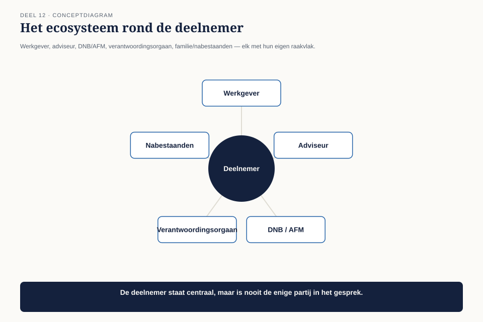
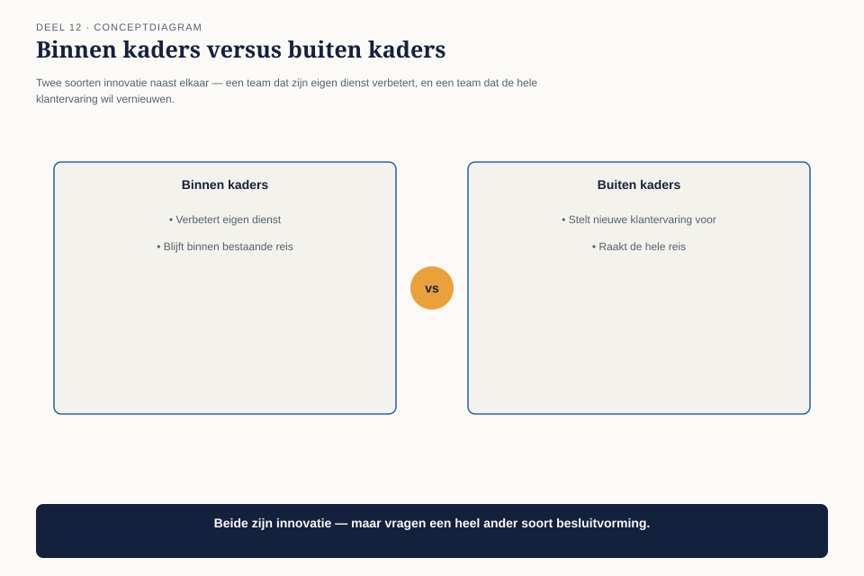

Deel 12 — Digital Customer
Slidedeck · Ductus-cursus BTABoK · Niveau 2 · deel 12 van 30 · 25 slides
Slide 1 — Titel: Digital Customer
Deel 12
Ductus
Slide 2 — Agenda: Vandaag
- Twee schermen, twee verhalen
- Het ecosysteem
- De klantreis over teamgrenzen heen
- Innoveren binnen en buiten de kaders
- Terug naar het breukpunt
Slide 3 — Sectie: 1. Twee schermen, twee verhalen
Slide 4 — Bullets: Het incident
- Portaal toont bedrag A, uitlegpagina toont bedrag B
- Team Portaal: rekendatum van vandaag
- Team Communicatie: rekendatum ververst 's nachts
- Beide correct volgens hun eigen requirement
Slide 5 — Figuur: Het breukpunt

Slide 6 — Statement: Niet onzorgvuldigheid
Niemand had de rol om over de teamgrens heen te kijken
Slide 7 — Sectie: 2. Het ecosysteem
Slide 8 — Figuur: Rond de deelnemer

Slide 9 — Bullets: Partijen zonder klantrelatie, mét invloed
- Werkgever · financieel adviseur · toezichthouder
- Verantwoordingsorgaan · nabestaanden
- De financieel adviseur: nooit als stakeholder benoemd, ondanks een groot deel van het gebruik
Slide 10 — Opdracht: Opdracht 1 — Het ecosysteem in kaart
20 minuten, individueel
Minimaal 5 partijen zonder directe klantrelatie · ooit benoemd als stakeholder?
Slide 11 — Sectie: 3. De klantreis over teamgrenzen
Slide 12 — Figuur: De klantreiskaart

Slide 13 — Statement: Vijf breukpunten bij Mutatieplatform
Twee al opgetreden. Drie nog niet.
Slide 14 — Bullets: Wat je bij elk breukpunt vastlegt
- Geen technische specificatie
- Wie zorgt voor consistentie op deze overgang, en hoe wordt dat getoetst?
- Bij het rekendatumprobleem: geen van beide teams fout — niemand had de vraag gesteld
Slide 15 — Opdracht: Opdracht 2 — Je eigen klantreiskaart
25 minuten, tweetallen
Teken de reis · markeer teamgrenzen · welk breukpunt is al opgetreden?
Slide 16 — Sectie: 4. Innoveren binnen en buiten kaders
Slide 17 — Figuur: Twee soorten innovatie

Slide 18 — Tabel: Wie beslist
| Binnen kaders | Buiten kaders | |
|---|---|---|
| Voorbeeld | eigen laadtijd verbeteren | hele intake herzien |
| Wie beslist | het team zelf | het programma als geheel |
Slide 19 — Statement: Dezelfde logica als deel 9
Kaders stellen vs. ontwerpen — nu toegepast op innovatie
Slide 20 — Opdracht: Opdracht 3 — Binnen of buiten de kaders
15 minuten, individueel
Vijf voorstellen · wie beslist?
Slide 21 — Sectie: 5. Terug naar het breukpunt
Slide 22 — Bullets: Claudette's oplossing
- Geen nieuwe governancelaag
- Elke vier weken een half uur: klantreiskaart samen bijwerken
- Past precies in het opdrachtblad uit deel 11 — de derde dienst, nu concreet ingevuld
Slide 23 — Opdracht: Opdracht 4 — Het lichte governance-voorstel
15 minuten, individueel
Max. 100 woorden · geen nieuwe goedkeuringslaag
Slide 24 — Bullets: Wat dit deel heeft opgeleverd
- Het ecosysteem is groter dan de directe klant
- De klantreiskaart maakt breukpunten zichtbaar vóórdat ze incidenten worden
- Innovatie: binnen kaders (team) versus buiten kaders (programma)
Slide 25 — Titel: Volgende keer
Deel 13 — Digital Business
Past deze functie op de capability-kaart, of is het een afleiding?